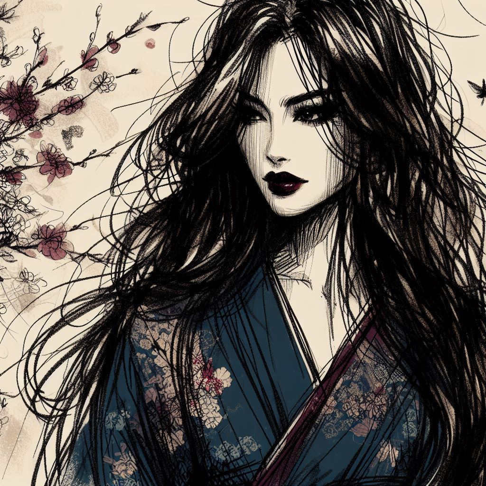

黄昏の震え
夜のヴェールに包まれ、儚いものの化身として、夢と現実の間をかすめる影。彼女の存在は、夜の蝶のキスよりも軽やかで、夜のベルベットに溶けるような抱擁。
暗い水面に揺らめく反映、その本質を捉えようとする者にとって変わりゆく誘惑。彼女の目の深さには、欲望と確信が溺れる淵があり、感覚さえ迷い込む王国への旅へと誘う。見るよりも感じるそのシルエットは、葉の間で官能的に踊り、遠い嵐の熱を帯びた空気にため息をつく。

秘められたゲームの繊細さ、欲望のチェスボードで滑る駒、各動きはさわやかなもの、各休止は約束。目に見えずとも触れることができる彼女は、果たされない情熱の詩、夜明けに囁かれる秘密、夜が抱擁で包む謎。